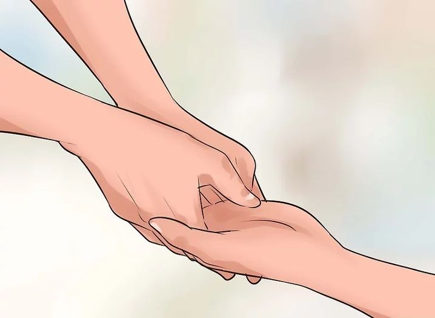
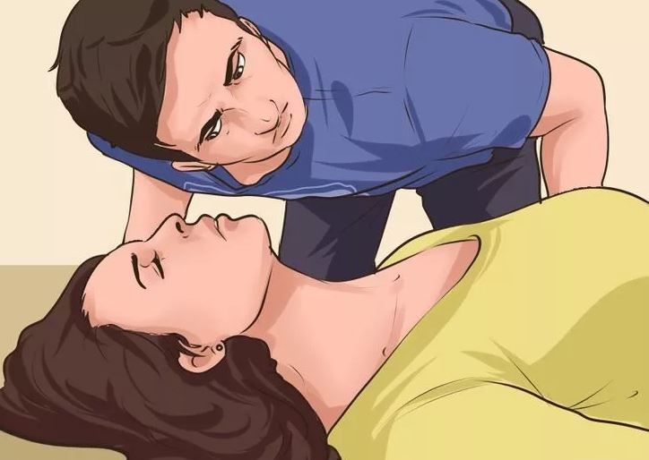
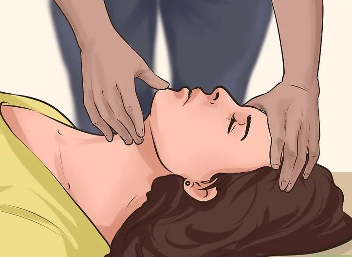
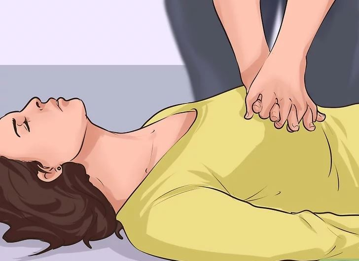
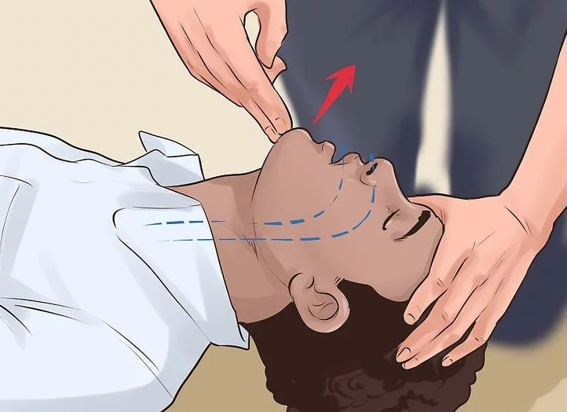
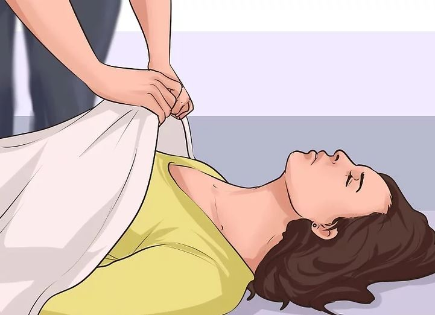
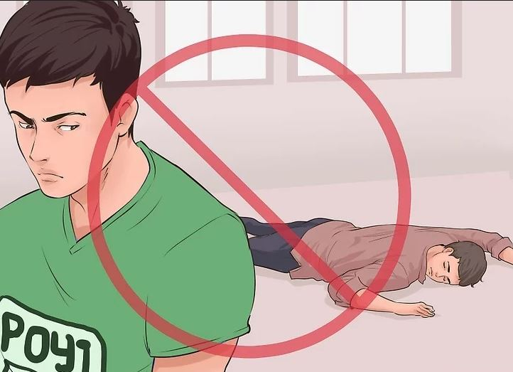

Basic First Aid
METHOD 2: Caring for an Unconscious Person

1. Determine responsiveness
If a person is unconscious, try to rouse them by speaking to them or by tapping on the shoulder. do not be afraid to speak loudly or even shout. If they do not respond to activity, sound, touch, or other stimulation, determine whether they are breathing.

2. Check for breathing and a pulse.
If unconscious and unable to be roused, check for breathing: look for a rise in the chest area; listen for the sound of air coming in and out; feel for air using the side of your face. If no signs of breathing are apparent, place two fingers under the chin and gently guide the face pointing upwards to open up their airways. If any debris such as vomit can be seen, it is appropriate to move them onto their side to allow it to get out, which is achieved with the recovery position. Check for a pulse.
During the COVID-19 pandemic, only look for signs of breathing rather than listening to or trying to feel the person’s breath to avoid exposure.

3. If the person remains unresponsive and has no pulse, prepare for CPR.
Unless you suspect a spinal injury, carefully roll them onto their back and open their airway. If you suspect a spinal injury, leave the person where they are, provided they are breathing.
Keep the head and neck aligned.
Carefully roll them onto their back while holding their head.
Open the airway by lifting the chin.
4. Give rescue breaths if the person is unresponsive and has a pulse, but isn't breathing.
Pinch the person’s nostrils and completely cover their mouth with yours. Give a deep breath that lasts 1 second and watch to see if their chest rises. If it does, give them another breath. If they don’t tilt their head and chin again before trying a breath.
During COVID-19, it’s recommended that you don’t use rescue breaths if the person has a confirmed or suspected case of coronavirus.

5. Perform 30 chest compressions and two rescue breaths as part of CPR
In the center of the chest, just below an imaginary line running between the nipples, put your two hands together and compress the chest down approximately 2 inches (5.1 cm) at a rate of 100 compressions per minute (or to the beat of "Staying Alive"). After 30 compressions, give two rescue breaths, done by opening the airways, closing the nose, and fully covering the mouth hole. Then check vitals. If the breaths are blocked, reposition the airway. Make sure the head is tilted slightly back and the tongue is not obstructing it. Continue this cycle of 30 chest compressions and two rescue breaths until someone else relieves you.
If you’re worried about COVID-19 exposure, just do continuous chest compressions without rescue breaths.
Even if you only do chest compressions, it’s better than not performing CPR at all.

6. Remember your ABCs of CPR
The ABCs of CPR refers to the three critical things you need to look for. Check these three things frequently as you give the person first aid CPR.
Airway. Does the person have an unobstructed airway?
Breathing. Is the person breathing?
Circulation. Does the person show a pulse at major pulse points (wrist, carotid artery, groin)?

7. Make sure the person is warm as you wait for medical help.
Drape a towel or a blanket over the person if you have one; if you don't, remove some of your own clothing (such as your coat or jacket) and use it as a cover until medical help arrives. However, if the person has a heatstroke, do not cover him or keep him warm. Instead, try to cool him by fanning him and damping him.

8. Pay attention to a list of dont's.
As you administer first aid, be sure to be aware of these things that you should not do in any case:
Do not feed or hydrate an unconscious person. This could cause choking and possible asphyxiation.
Do not leave the person alone. Unless you absolutely need to signal or call for help, stay with the person at all times.
Do not prop up an unconscious person's head with a pillow.
Do not slap or splash with water an unconscious person's face. These are movie gimmicks.
If the person appears in danger due to an electric shock, you may attempt to move it, but only with a non-conductive object.
NEXT